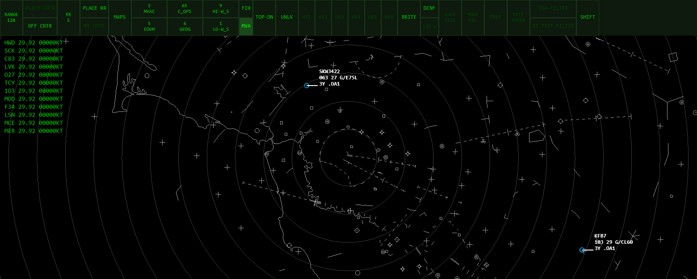

A. Centred modal overlay, in the export overlay’s style
The same box as “Exporting recording…”: a dark rounded panel in the middle of the window with a bold line and a 200 px progress bar. It covers the centre of the radar until the jump lands.
Aircraft ListGround ViewRadar ViewControllersMETAR

Rewinding to 42:10...mic: off